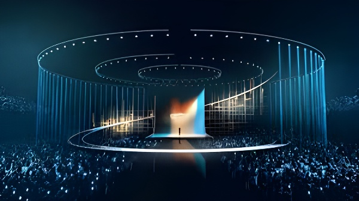

🎤🇮🇱🇪🇺La 70e édition de l'Eurovision, organisée à Vienne du 12 au 16 mai 2026, s'ouvre sous une tempête politique sans précédent. Cinq pays boycottent le concours en raison de la participation d'Israël, dont la présence est contestée depuis le début de la guerre à Gaza en octobre 2023. Après la quasi-victoire israélienne controversée à Bâle en 2025, l'UER a durci ses règles de vote, maintenu la candidature de Tel-Aviv — et déclenché le plus grand boycott de l'histoire du concours. Entre musique, géopolitique et débat sur les « deux poids, deux mesures », l'Eurovision 2026 interroge la capacité de la culture à rester apolitique dans un monde en crise.
Pour comprendre la crise de 2026, il faut revenir à la finale de Bâle, le 17 mai 2025. L'Autrichien JJ remporte l'Eurovision avec sa chanson Wasted Love (436 points). La représentante israélienne, Yuval Raphael, avec New Day Will Rise, termine deuxième (357 points) — mais cette deuxième place cache une anomalie statistique frappante. Survivante du massacre du festival Nova du 7 octobre 2023, Raphael recueille 297 points du vote public, soit le score le plus élevé de toute l'édition. En revanche, les jurés professionnels des pays participants la placent en 14e position, avec seulement 60 points — un écart abyssal.
Cet écart exceptionnel entre vote populaire et vote des jurys nourrit un débat acéré sur l'intégrité du scrutin. Le New York Times révèle en mai 2026 que le gouvernement israélien a dépensé au moins 800 000 dollars en publicités ciblées pour promouvoir sa candidate en 2024, et davantage encore en 2025. Des diplomates israéliens auraient directement contacté des responsables de l'UER pour défendre la participation du pays. Le Guardian relève par ailleurs une contradiction entre les résultats du télévote et la popularité réelle des chansons : New Day Will Rise ne se classait qu'en 19e position sur Spotify la semaine du concours.
Le 4 décembre 2025, l'UER confirme officiellement la participation d'Israël à l'Eurovision 2026, à Vienne. La réaction est immédiate. Cinq pays annoncent leur retrait : les Pays-Bas (AVROTROS), l'Espagne (RTVE), l'Islande (RÚV), la Slovénie (RTV Slovenija) et l'Irlande (RTÉ). Leurs motivations convergent : la guerre à Gaza — qui a fait plus de 72 000 morts selon les chiffres disponibles en mai 2026 — et ce qu'ils qualifient d'ingérence prouvée d'Israël dans le vote 2025. Trois d'entre eux (Irlande, Espagne, Slovénie) décident également de ne pas diffuser le concours. La Slovénie remplace la retransmission par un cycle de films Voices of Palestine.
Attaques du Hamas en Israël : 1 200 morts, 250 otages. Début de la guerre à Gaza. La question de la participation israélienne à l'Eurovision s'invite dans le débat dès l'édition 2024 à Malmö.
Première edition post-7 octobre. Manifestations à Malmö. Eden Golan représente Israël avec "Hurricane" et termine 5e. L'UER écope d'une amende après des incidents. L'Islande est condamnée pour des foulards palestiniens en 2019 — précédent invoqué par les boycotteurs.
JJ (Autriche) remporte l'Eurovision avec 436 points. Yuval Raphael (Israël) est 2e grâce au vote public (297 pts) malgré la 14e place des jurys (60 pts). L'écart sans précédent déclenche la controverse sur l'intégrité du vote.
L'UER convoque un vote extraordinaire de ses membres sur l'exclusion de KAN, le diffuseur israélien. Le scrutin secret ne réunit pas la majorité absolue requise : Israël reste dans la compétition. Réformes du vote adoptées en contrepartie.
L'UER confirme la participation d'Israël à Vienne 2026. Cinq pays annoncent leur boycott en cascade dans les jours suivants.
Plus de 1 100 artistes — dont Peter Gabriel, Macklemore et Massive Attack — signent une lettre ouverte du mouvement « No Music for Genocide » appelant au boycott. Salvador Sobral, vainqueur 2017, avait refusé dès décembre 2025 de se produire à Vienne.
Noam Bettan chante « Michelle » à la Wiener Stadthalle sous des cris de « Stop the genocide » audibles en direct. Quatre personnes sont expulsées. Israël se qualifie pour la finale aux côtés de la Grèce, la Finlande, la Belgique, la Suède, la Moldavie, la Serbie, la Croatie, la Lituanie et la Pologne.
Grande finale à la Wiener Stadthalle. 70e anniversaire du concours fondé en 1956. Israël concourt parmi 25 finalistes.
Noam Bettan, 24 ans, vainqueur du télé-crochet israélien Rising Star, représente Israël à Vienne avec la ballade Michelle, écrite en hébreu, anglais et français. La chanson a été co-écrite avec Yuval Raphael, la représentante de 2025. Bettan se prépare à affronter les sifflets dès les semaines précédant le concours, s'entraînant délibérément sur fond de huées enregistrées. Le 12 mai, lors de la première demi-finale, des cris de « Stop the genocide » sont audibles en direct au début de sa performance. L'ORF, la chaîne autrichienne organisatrice, avait décidé de ne pas recourir à des technologies d'atténuation des sifflets. Quatre spectateurs perturbateurs sont expulsés par la sécurité.
« J'ai entendu les huées au début. Elles étaient très, très fortes. Mais je me suis concentré sur la performance. J'ai cherché des yeux les drapeaux israéliens dans le public. »
— Noam Bettan, après sa qualification en finale, 12 mai 2026Israël se qualifie pour la grande finale du 16 mai, marquant la cinquième fois en six ans que le pays atteint la finale. L'UER avertit également Kan, le diffuseur israélien, d'avoir lancé une campagne publicitaire en plusieurs langues invitant le public à voter dix fois pour Bettan — « contraire aux règles et à l'esprit du concours ». Kan retire la campagne tout en niant avoir enfreint le règlement.
Le paradoxe central de la polémique est celui-ci : la Russie a été exclue de l'Eurovision dès mars 2022, deux semaines après le début de son invasion de l'Ukraine, sans vote des membres de l'UER. Israël, accusé par plusieurs gouvernements, organisations internationales et la Cour internationale de justice d'actes pouvant constituer un génocide à Gaza, est maintenu dans la compétition après un vote secret. Cette asymétrie est dénoncée par les boycotteurs et les associations de défense des droits de l'homme.
« Le fait que l'UER n'ait pas suspendu Israël comme elle l'avait fait avec la Russie est un acte de lâcheté et une illustration de deux poids deux mesures flagrants. »
— Agnès Callamard, Secrétaire générale d'Amnesty International, mai 2026Les défenseurs de la participation d'Israël avancent de leur côté que l'Eurovision est une compétition entre diffuseurs membres — KAN, la télévision publique israélienne, est membre de l'UER depuis 1957 — et non entre gouvernements. L'Allemagne souligne que toute exclusion créerait un précédent politiquement dangereux. L'Autriche, en tant que pays hôte, a refusé d'interférer dans la décision de l'UER.
L'Eurovision n'a jamais été totalement imperméable à la politique internationale. Le Liban s'est retiré en 2005 pour refuser de diffuser la prestation israélienne. La Grèce et la Turquie ont pratiqué des boycotts mutuels dans les années 1970. La victoire de l'Ukraine en 2022, interprétée comme un vote de solidarité après l'invasion russe, avait renforcé les critiques sur la politisation du télévote. Ce qui est nouveau en 2026, c'est l'ampleur du phénomène : jamais cinq pays n'avaient simultanément boycotté l'édition.
| Pays boycotteur | Diffuseur | Diffusion du concours ? |
|---|---|---|
| 🇪🇸 Espagne | RTVE | Non — programme spécial |
| 🇮🇪 Irlande | RTÉ | Non — Father Ted & autres |
| 🇸🇮 Slovénie | RTV Slovenija | Non — cycle Voices of Palestine |
| 🇳🇱 Pays-Bas | AVROTROS | Oui (par NOS/NTR) |
| 🇮🇸 Islande | RÚV | Oui |
Fondé en 1956 sur le slogan « unis par la musique », l'Eurovision porte depuis l'origine une ambition universaliste — réunir les peuples par la culture au-delà des clivages politiques. Cette ambition est aujourd'hui soumise à une tension inédite. Le concours a su exclure la Russie en 2022 au nom de ses valeurs, reconnaissant implicitement que la neutralité absolue est impossible. En maintenant Israël malgré des pressions équivalentes, l'UER se retrouve accusée non pas de neutralité, mais de partialité. Le débat dépasse le concours lui-même : il reflète la difficulté de l'Europe à parler d'une seule voix sur le conflit israélo-palestinien, entre États proches de Jérusalem et ceux plus sensibles à la cause palestinienne. À Vienne, la scène de l'Eurovision est devenue le lieu où cette fracture européenne s'expose sous les projecteurs — et le monde entier regarde.